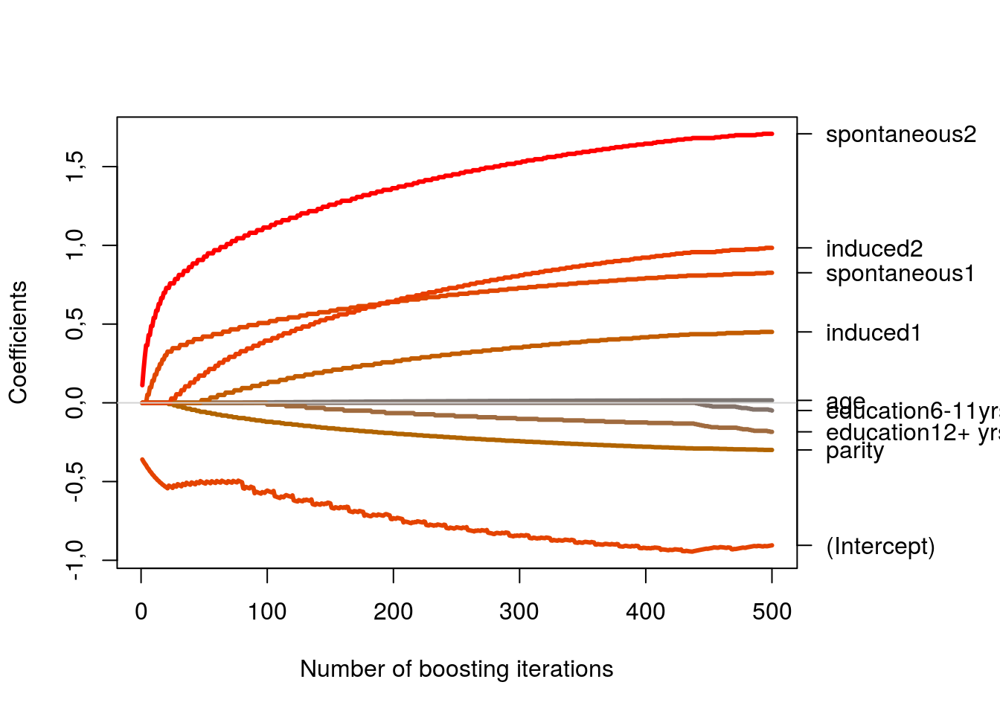
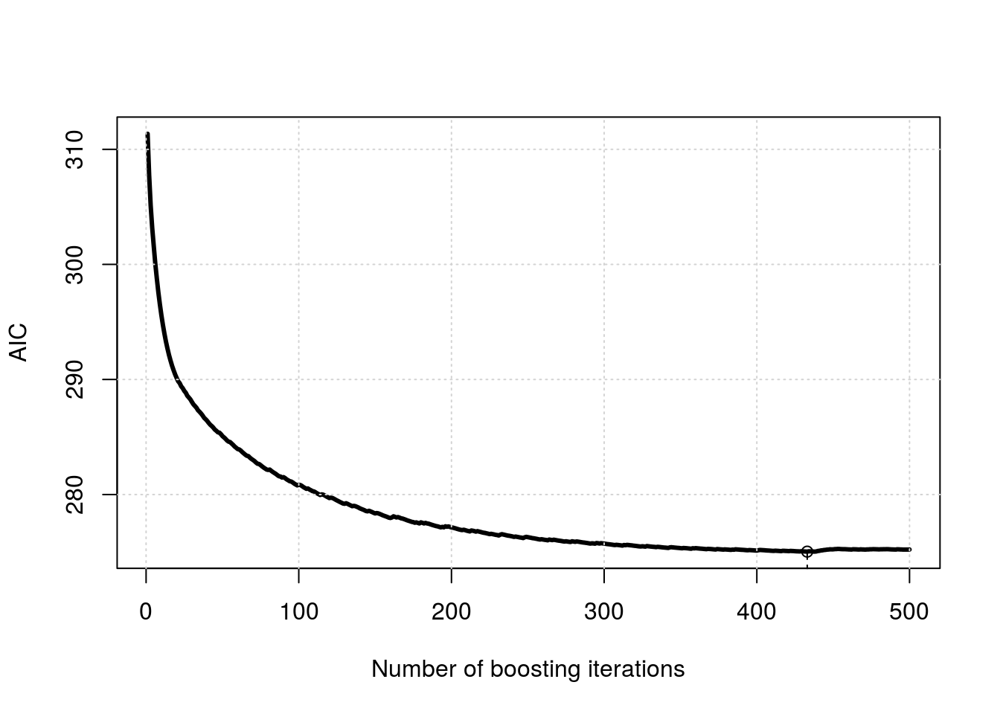
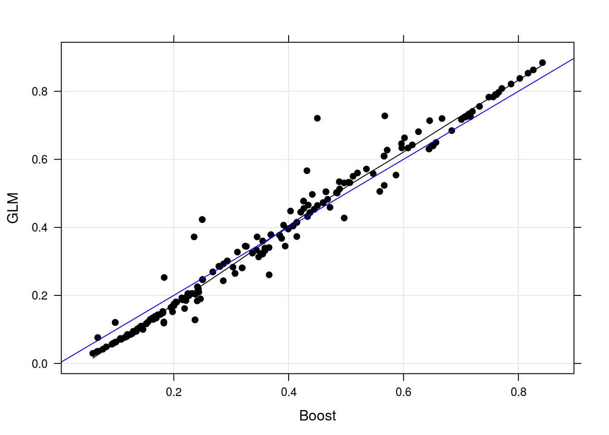
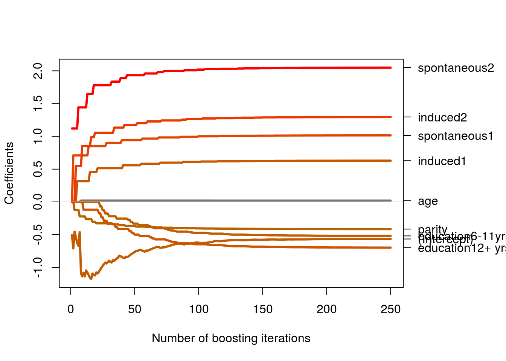
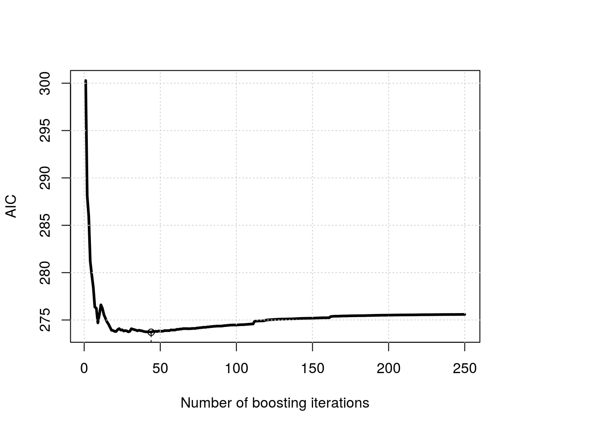
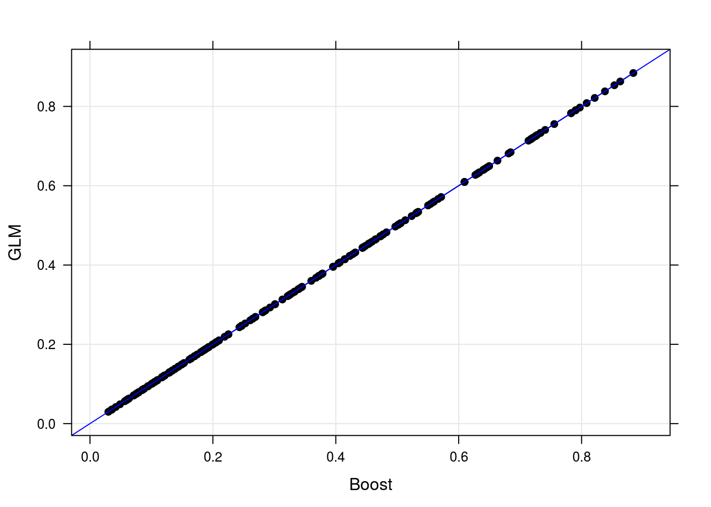

Neste trabalho prático será aplicado o método Gradiente Descendente, utilizado para maximizar ou minizar função, no contexto do problema estatístico de minimização de uma função custo.
Nosso enfoque será no algoritmo Gradiente Descendente Boosting, onde a minimizamos uma função custo definida e, a cada iteração do algoritmo, os parâmetros do modelo proposto, decorrente da função custo, são atualizados via o negativo do gradiente.
Felizmente temos a implementação do algoritmo Gradiente Descendente Boosting no software estatístico R. O método computacional esta disonível na biblioteca [mboost], cujo autor também generaliza o método para ajuste de modelos lineares generalizados, regressão quantílica, modelos de sobrevivência, entre outros.
Os dados considerados para aplicação do método é denominado por infert, disponível no pacote datasets. Este conjunto de dados refere-se a um estudo de caso-controle pareado sobre infertilidade após o aborto espontâneo ou induzido. O conjunto possui 8 colunas e 248 observações. As duas últimas colunas do conjunto de dados podem ser descartadas para análise, pois são de identificação. Com isso dispomos das variáveis education (0-5 anos, 6-11 anos ou >12 anos), age (idade em anos), parity (contagem), induced (0, 1, >2 abortos induzidos), spontaneous (0, 1, >2 abortos espontâneos) e case (caso ou controle). A documentação dos dados sugere o ajuste do modelo:
\[ case \mid X \sim Binomial(\hat{\pi}) \\ logit (\hat{\pi}) = X\underline{\beta} \]
onde na matriz X estão todas as variáveis dummy derivadas das variáveis originais descritas acima. Os modelos são ajustados no software R da seguinte forma:
##----------------------------------------------------------------------
## Preditor adotado
preditor <- case ~ age + parity + education + spontaneous + induced
data <- infert
##-------------------------------------------
## Via GLM
m0glm <- glm(preditor, data = data, family = binomial)
##-------------------------------------------
## Via Bootstrap Boosting
library(mboost)
m0boost <- glmboost(preditor, data = data,
family = Binomial(link = "logit"),
control = boost_control(mstop = 500),
center = T)O objeto m0boost no R tem classe glmboost e mboost e para estas classes o pacote dispõe de vários métodos. Utilizaremos alguns deles para verificar o ajuste do modelo GLM via gradiente descendente boosting na próxima seção.
A primeira forma para verificar a convergência do método é avaliar as cadeias de valores gerados para estimativa dos parâmetros.
## Verificando convergência dos parâmetros
par(mar = c(5, 4, 4, 7) + 0.1)
plot(m0boost, off2int = TRUE, lwd = 3, main = "")
No gráfico são exibidas os valores de cada iteração dos 9 parâmetros do modelo. Note utilizando o algoritmo com mstop (nº de iterações) igual a 100 e com “passo”x nu igual 0.1 (padrão da função) o ajuste não foi não foi satisfatório para o problema, as cadeias não “estacionaram” em um valor. Para efeitos didáticos continuaremos com esta configuração.
Uma outra forma para verificar a convergência é avaliando a estabilidade da função custo. Neste problema o Critério de Informação de Akaike é proporcional a função custo, abaixo temos a avaliação do critério de Akaike para cada iteração.
## Verificando convergência do AIC (função da função custo adotada)
layout(1)
aic <- AIC(m0boost, method = "classical")
plot(aic, lwd = 3)
grid()
Note que, em corcordância com o obervado no gráfico dos valores estimados para cada parâmetro em cada iteração, não temos uma convergência do AIC com 500 iterações.
Abaixo como comparação apresentamos os parâmetros estimados em ambos os métodos.
compareCoefs <- cbind("GLM" = coef(m0glm),
"Boost" = c(
coef(m0boost)[1] + attr(coef(m0boost), "offset"),
coef(m0boost)[-1])*2
)
knitr::kable(compareCoefs, align = c("c", "c"), digits = 4)| GLM | Boost | |
|---|---|---|
| (Intercept) | -1.1307 | -1.8097 |
| age | 0.0393 | 0.0311 |
| parity | -0.8301 | -0.5985 |
| education6-11yrs | -1.0394 | -0.0975 |
| education12+ yrs | -1.3975 | -0.3682 |
| spontaneous1 | 2.0310 | 1.6517 |
| spontaneous2 | 4.0988 | 3.4168 |
| induced1 | 1.2590 | 0.9004 |
| induced2 | 2.5921 | 1.9677 |
Note que os parâmetros estimados tiveram uma notável diferença (os ajustes de ofsset e escala adotados pela função glmboost já foram considerados, os valores estão na mesma escala) isso se deve a má calibração do algoritmo como já comentado.
compareCost = rbind("**AIC**" = c("GLM" = AIC(m0glm), "Boost" = aic),
"**logLik**" = c(logLik(m0glm), logLik(m0boost))
)
knitr::kable(compareCost, align = c("c", "c"), digits = 4)| GLM | Boost | |
|---|---|---|
| AIC | 275.7848 | 275.0398 |
| logLik | -128.8924 | -130.2292 |
De forma similar para as medidas de custo calculadas também observamos a diferença. Não tão acentuada quanto nos parâmetros, mas ainda assim significativa.
Como o foco em Machine Learning não é inferência e sim predição, abaixo é apresentado o gráfico dos valores preditos para o modelo GLM estimado via IWLS (Interative Weighted Least Squares) e via Gradiente Descendente Boosting. Claro que são apenas as predições para o próprio conjunto de ajuste, porém como isso ocorre para ambos os modelos a comparação é justa.
pred <- data.frame(
"GLM" = predict(m0glm, type = "response"),
"Boost" = predict(m0boost, type = "response"))
library(lattice)
xyplot(GLM ~ Boost, data = pred, pch = 19,
type = c("p", "smooth", "g"),
col = 1, panel = function(x, y, ...) {
panel.xyplot(x, y, ...)
panel.abline(0, 1, col = 4)
})
Em média os valores preditos são os mesmos para ambos os modelos ajustados, porém há uma variação devido a má calibração do método.
Testando várias configurações do método (valores máximos de iteração e valores distintos de nu “passo”) e observando as características do modelo proposto chegamos a configuração abaixo que otimiza a utilização do método.
##-------------------------------------------
## Via Bootstrap Boosting
library(mboost)
m0boost <- glmboost(preditor, data = data,
family = Binomial(link = "logit"),
control = boost_control(mstop = 250, nu = 1),
center = T)E agora recalculando todos os resultados exibidos anteriormente:
## Verificando convergência dos parâmetros
par(mar = c(5, 4, 4, 7) + 0.1)
plot(m0boost, off2int = TRUE, lwd = 3, main = "")
## Verificando convergência do AIC (função da função custo adotada)
layout(1)
aic <- AIC(m0boost, method = "classical")
plot(aic, lwd = 3)
grid()
## Comparando os coeficientes estimados
cbind("GLM" = coef(m0glm),
"Boost" = c(coef(m0boost)[1] + attr(coef(m0boost), "offset"),
coef(m0boost)[-1])*2)## GLM Boost
## (Intercept) -1.13068389 -1.1317909
## age 0.03929435 0.0392777
## parity -0.83011490 -0.8296435
## education6-11yrs -1.03944775 -1.0376724
## education12+ yrs -1.39751988 -1.3956732
## spontaneous1 2.03101321 2.0301672
## spontaneous2 4.09880583 4.0974352
## induced1 1.25903175 1.2582527
## induced2 2.59206400 2.5907822rbind("**AIC**" = c("GLM" = AIC(m0glm), "Boost" = aic),
"**logLik**" = c(logLik(m0glm), logLik(m0boost))
)## GLM Boost
## **AIC** 275.7848 273.7127
## **logLik** -128.8924 -128.8924## Comparando os valores preditos
pred <- data.frame(
"GLM" = predict(m0glm, type = "response"),
"Boost" = predict(m0boost, type = "response"))
library(lattice)
xyplot(GLM ~ Boost, data = pred, pch = 19,
type = c("p", "smooth", "g"),
col = 1, panel = function(x, y, ...) {
panel.xyplot(x, y, ...)
panel.abline(0, 1, col = 4)
})
E assim obtemos a equivalência dos métodos, exemplificando que uma má escolha dos parâmetros do método pode levar a modelos mal estimados. Um estudo posterior ao ajuste se faz sempre necessário.
cat(format(Sys.time(),
format = "Atualizado em %d de %B de %Y.\n\n"))## Atualizado em 08 de agosto de 2016.sessionInfo()## R version 3.3.1 (2016-06-21)
## Platform: x86_64-pc-linux-gnu (64-bit)
## Running under: Ubuntu 14.04.5 LTS
##
## locale:
## [1] LC_CTYPE=en_US.UTF-8 LC_NUMERIC=C
## [3] LC_TIME=pt_BR.UTF-8 LC_COLLATE=en_US.UTF-8
## [5] LC_MONETARY=pt_BR.UTF-8 LC_MESSAGES=en_US.UTF-8
## [7] LC_PAPER=pt_BR.UTF-8 LC_NAME=C
## [9] LC_ADDRESS=C LC_TELEPHONE=C
## [11] LC_MEASUREMENT=pt_BR.UTF-8 LC_IDENTIFICATION=C
##
## attached base packages:
## [1] parallel stats graphics grDevices utils datasets methods
## [8] base
##
## other attached packages:
## [1] mboost_2.6-0 stabs_0.5-1 knitr_1.12.3
## [4] latticeExtra_0.6-28 RColorBrewer_1.1-2 lattice_0.20-33
##
## loaded via a namespace (and not attached):
## [1] magrittr_1.5 MASS_7.3-45 splines_3.3.1
## [4] nnls_1.4 quadprog_1.5-5 multcomp_1.4-5
## [7] highr_0.5.1 stringr_1.0.0 tools_3.3.1
## [10] grid_3.3.1 TH.data_1.0-7 modeltools_0.2-21
## [13] htmltools_0.3 yaml_2.1.13 survival_2.39-4
## [16] digest_0.6.9 Matrix_1.2-6 party_1.0-25
## [19] formatR_1.3 codetools_0.2-14 strucchange_1.5-1
## [22] evaluate_0.9 rmarkdown_0.9.6 coin_1.1-2
## [25] sandwich_2.3-4 stringi_1.0-1 compiler_3.3.1
## [28] stats4_3.3.1 mvtnorm_1.0-5 zoo_1.7-13